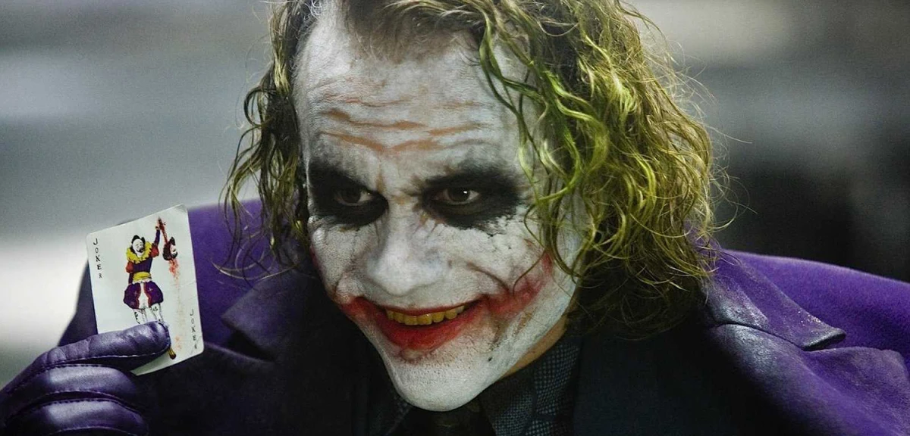
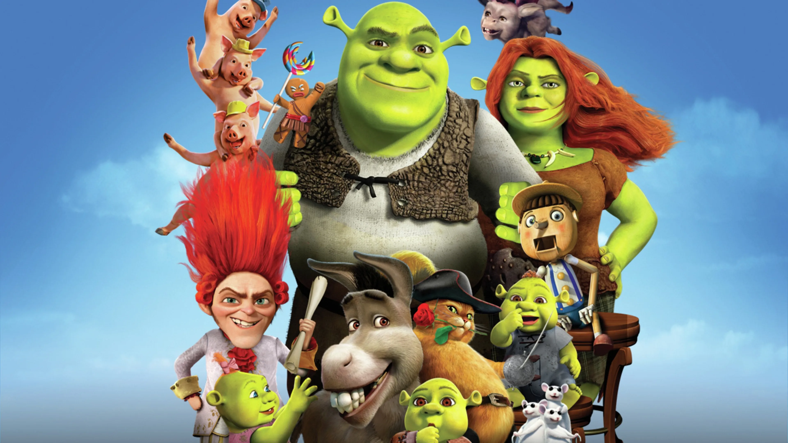

Sencillamente el papel del guason interpretado por kevin zambrano es una cosa de locos ya que para llegar a tal punto que toda la audiencia ame mas al villano que al heroe le da un giro a la historia de manera que bua madre mia
Es una pelicula muy fuerte de emociones desde el minuto 7 ya estaba llorando al verla asi que si eres sensible y te gusta llorar un poco te la recomiendo
me gusta como interpretan a burro y al gato con botas asi que la recomeindo a mil
